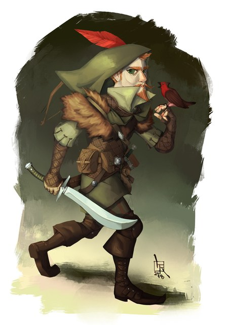

Trumbert — Round 2 runbook
📋 Review panel →Base assets — what this round builds on
The source image(s) every generation in this round starts from. Click to zoom; open “inputs” for the prompt and reference images that produced each one.

Goal
Re-establish Trumbert's look after Round 1 read too much like a stocky dwarf. We rebuild him lithe, wiry and fey, strip the sun motifs off his weapon and shield (he carries a plain cold-iron scimitar and a plain steel shield), and let a single bold sun emblem plus his ankh pendant carry his devotion to Sarenrae. The round settles which outer kit he wears and gets your read on a few pose options before we lock the design and move to turnarounds + 3D.
The choices on the table
1 — Which kit? (both keep the breastplate, both lithe & fey, same heroic guard pose — the *only* variable is the outer layer)
| Kit | What it is | The read it gives |
|---|---|---|
| A — Adventurer-champion | Breastplate under a fur-collared mantle / short cloak; sun emblem embossed on the breastplate | Mobile, fey, ranger-ish — closest to your reference's vibe |
| B — Plate champion | Fitted breastplate + a clean knee-length tabard/surcoat carrying the sun emblem | The classic holy-champion silhouette, rebuilt slim & fey |
2 — Which pose? You asked to see pose possibilities. Here's the map — all obey our basing rule (both feet reach the ground; no pinning) and keep both hands provable. We'll render the starred three so you can react to them; the baseline is shown by the kit renders above.
| Pose | What he's doing | Basing / print | Identity read | Rendered? |
|---|---|---|---|---|
| P1 — Heroic guard *(baseline, default)* | Stands tall, scimitar raised up-and-out, shield up across the chest, beaming | Two flat feet, very safe | Everything provable front-on; both weapons prominent | via kit A/B |
| P2 — Open hand of redemption ★ | Shield slung on his back, scimitar lowered at his side, off-hand open in welcome — the redemption-preacher | Two flat feet, safe | Personality-forward; shield less visible (on back) | ★ flash31 |
| P3 — Advancing guard ★ | A half-step forward, shield leading, sword drawn back ready | Lead + trailing foot both reach ground (our one "dynamic" allowance) | Kinetic, protective; slightly less base contact | ★ flash31 |
| P4 — Defender's brace ★ | Low, wide, shield squared forward to absorb a blow (his Shield Block), sword cocked ready | Wide flat stance — the most print-stable | The "I'll stand between you and them" champion | ★ flash31 |
*(Pose is separable from kit — the pose-board renders use Kit A, but whichever pose you pick can be built in whichever kit you pick. P5, a high sun-blessing raise, is noted but dropped for now: a raised-overhead blade risks print overhang.)*
3 — What does the fey reference pull in? (a probe, not a choice) The clean design above is reference-free. Separately, we run one reference-conditioned sweep — the same fey Arm-A prompt but with your bardish-gnome image handed to each model as an input — so we can *see* what the reference actually contributes. Heads-up on how img2img behaves: a reference's pose and specific details copy from the pixels and override the words, so these renders will likely also drag in the feathered cap, moustache, songbird, and the striding pose — the very details you said not to adopt. That's the point of the probe: it shows the fey *vibe* transfer alongside the baggage, so you can decide whether any reference element is worth keeping. The clean text-only renders remain the design path.
What we need from you
- Sign off on the redirected spec (
trumbert/spec.md) — or redline. - Pick the kit (A adventurer-champion / B plate champion) once you see the renders — or say "keep exploring".
- React to the poses (P1–P4): which one(s) feel like Trumbert? Lock one, or ask for more variations.
- Approve the spend: Track A ≈ $3.00 (six-model image sweep incl. the reference probe), Track B = 2 Meshy text-to-3D rolls (credits).
Cost
Track A ≈ $3.00 (the decider six: flash31 $0.10 / grokq $0.07 / seedream45 $0.04 / gptimage2 $0.17 / riverflow25 ~$0.34 text-only / mai25 ~$0.10): 12 kit renders (×2 arms ≈ $1.64) + 3 pose renders (flash31 ×3 ≈ $0.30) + 6 reference-conditioned renders (≈ $1.01 — riverflow25 ~$0.53 with a reference image dominates it). riverflow25 drives most of the increase over the four-model plan; dropping it ≈ $1.90. Track B = Meshy credits (~5–20 per text-to-3D roll × 2), no USD.
Technical plan — models, prompts, commands (pipeline detail)
What changed going in (spec / prompt / process deltas)
- Spec redirect (
spec.md, 2026-07-14 status entry): burly-laborer → lithe/wiry/fey; Str 18 reframed as fey strength; scimitar → plain cold-iron (no sun pommel/guard/etch); shield → plain steel (no sunburst boss); one bold geometric chest sun emblem (thick, ≈8–12 rays, no filigree — R1 blind-detect thin-emblem fix) + ankh pendant; face clean-shaven; hair uncovered; breastplate pinned; outer layer (mantle vs tabard) is this round's A/B; pose menu explored. - Prompts: five new Track-A prompts —
r2-armA-adventurer-guard.txt,r2-armB-plate-guard.txt(kit A/B, baseline pose P1), andr2-poseB-openhand.txt/r2-poseC-advancing.txt/r2-poseD-shieldbrace.txt(Arm-A kit, poses P2–P4). Track B:r2-meshy-text.txtrefreshed to the fey design (784 chars, under Meshy's 800 cap). - Model policy (currency check, Dimitri's ask): background research confirms
gemini-3.1-flash-image(Nano Banana 2) @2K is Google's current quality tier — the only newer Gemini image release is a 1K "Lite" draft lane, not an upgrade, soflash31stays default andpro2kbackup. Meshy 6 is current (no Meshy 7). Seedream 5.0 Pro (ByteDance, Jul 2026) is a genuinely new flagship worth a future slot, but it is not on OpenRouter yet (fal/Replicate only) → parked as a candidate, not wired this round (seedocs/experiments-backlog.md). - Model set — the decider six (Dimitri, 2026-07-14): this is a REDESIGN of an established character, not a from-scratch concept, and R1 already gave us per-model fit data. Track A uses
flash31, grokq, seedream45, gptimage2(the R1 strong reads) plusriverflow25andmai25(added by Dimitri) across BOTH kit arms and the reference probe. Cost/reliability caveats to read results against: riverflow25 is top-tier but pricey and its billing escalates with inputs (~$0.34 text-only → ~$0.53 with a reference image, so it dominates the probe cost); mai25 carries reliability strikes (occasional Azure output-moderation 400s —compare_genretries) and a chirality coin-flip history, so audit its handedness explicitly. - Reference-conditioned probe (Dimitri, 2026-07-14): keep the design path reference-free, but add ONE sweep that hands
ref-bardish-gnometo each decider model as an image input (compare_gen.py --image …), on the Arm-A fey prompt. Expected behavior per the skill: an img2img reference's pose and specific details propagate from the pixels and override prompt text — so these renders will likely inherit the reference's striding near-profile pose (mirror-lottery risk) and its cap/moustache/bird, which the spec omits. This is an exploratory probe of the fey-vibe transfer, NOT part of the clean design path; audit it descriptively (what did the reference add?) rather than pass/fail against the spec.
Experiment matrix
Track A — kit A/B (baseline pose P1, one roll per model):
| # | Source (input) | Model | Prompt | Out stem (output) |
|---|---|---|---|---|
| A1 | text→image | flash31 | r2-armA-adventurer-guard.txt | trumbert-r2-armA-flash31 |
| A2 | text→image | grokq | same | trumbert-r2-armA-grokq |
| A3 | text→image | seedream45 | same | trumbert-r2-armA-seedream45 |
| A4 | text→image | gptimage2 | same | trumbert-r2-armA-gptimage2 |
| A5 | text→image | riverflow25 | same | trumbert-r2-armA-riverflow25 |
| A6 | text→image | mai25 | same | trumbert-r2-armA-mai25 |
| B1 | text→image | flash31 | r2-armB-plate-guard.txt | trumbert-r2-armB-flash31 |
| B2 | text→image | grokq | same | trumbert-r2-armB-grokq |
| B3 | text→image | seedream45 | same | trumbert-r2-armB-seedream45 |
| B4 | text→image | gptimage2 | same | trumbert-r2-armB-gptimage2 |
| B5 | text→image | riverflow25 | same | trumbert-r2-armB-riverflow25 |
| B6 | text→image | mai25 | same | trumbert-r2-armB-mai25 |
Track A — pose board (Arm-A kit, flash31 only):
| # | Source (input) | Model | Prompt | Out stem (output) |
|---|---|---|---|---|
| P2 | text→image | flash31 | r2-poseB-openhand.txt | trumbert-r2-poseB-openhand-flash31 |
| P3 | text→image | flash31 | r2-poseC-advancing.txt | trumbert-r2-poseC-advancing-flash31 |
| P4 | text→image | flash31 | r2-poseD-shieldbrace.txt | trumbert-r2-poseD-shieldbrace-flash31 |
Track A — reference-conditioned probe (Arm-A prompt + ref-bardish-gnome as an image input; one roll per model). Audited descriptively, not pass/fail.
| # | Source (input) | Model | Prompt + image | Out stem (output) |
|---|---|---|---|---|
| R1 | image+text | flash31 | r2-armA-adventurer-guard.txt + ref-bardish-gnome | trumbert-r2-refA-flash31 |
| R2 | image+text | grokq | same | trumbert-r2-refA-grokq |
| R3 | image+text | seedream45 | same | trumbert-r2-refA-seedream45 |
| R4 | image+text | gptimage2 | same | trumbert-r2-refA-gptimage2 |
| R5 | image+text | riverflow25 | same | trumbert-r2-refA-riverflow25 |
| R6 | image+text | mai25 | same | trumbert-r2-refA-mai25 |
Track B — direct text→Meshy baseline (refreshed design, two raw/no-remesh rolls):
| # | Source (input) | Tool / mode | Out stem (output) |
|---|---|---|---|
| TB1 | r2-meshy-text.txt (text only) | meshy_api.py run-text (text-to-3D preview, raw) | trumbert-r2-meshytext-1-raw |
| TB2 | same prompt | same (second roll) | trumbert-r2-meshytext-2-raw |
Re-rolls append a further digit.
Commands (run after sign-off)
# setup: deps + secrets (OP_SERVICE_ACCOUNT_TOKEN -> op CLI -> minis-pipeline vault; GEMINI + MESHY + OPENROUTER keys)
pip install -r requirements.txt # if not already
G=projects/herpeton-eradication-society/trumbert/generated
M=projects/herpeton-eradication-society/trumbert/models/round-2
PR=projects/herpeton-eradication-society/trumbert/prompts
mkdir -p "$G" "$M"
tools/drive_sync.sh pull projects/herpeton-eradication-society/trumbert/generated # fetch ref-bardish-gnome.jpg (needed for the reference probe)
# --- Track A: kit A/B (baseline pose) ---
python3 tools/compare_gen.py --prompt-file "$PR/r2-armA-adventurer-guard.txt" \
--out-dir "$G" --out-stem trumbert-r2-armA --variants flash31,grokq,seedream45,gptimage2,riverflow25,mai25 --jobs 4
python3 tools/compare_gen.py --prompt-file "$PR/r2-armB-plate-guard.txt" \
--out-dir "$G" --out-stem trumbert-r2-armB --variants flash31,grokq,seedream45,gptimage2,riverflow25,mai25 --jobs 4
# --- Track A: pose board (flash31, Arm-A kit) ---
python3 tools/compare_gen.py --prompt-file "$PR/r2-poseB-openhand.txt" --out-dir "$G" --out-stem trumbert-r2-poseB --variants flash31
python3 tools/compare_gen.py --prompt-file "$PR/r2-poseC-advancing.txt" --out-dir "$G" --out-stem trumbert-r2-poseC --variants flash31
python3 tools/compare_gen.py --prompt-file "$PR/r2-poseD-shieldbrace.txt" --out-dir "$G" --out-stem trumbert-r2-poseD --variants flash31
# --- Track A: reference-conditioned probe (Arm-A prompt + bardish reference as input) ---
python3 tools/compare_gen.py --prompt-file "$PR/r2-armA-adventurer-guard.txt" \
--image "$G/ref-bardish-gnome.jpg" \
--out-dir "$G" --out-stem trumbert-r2-refA --variants flash31,grokq,seedream45,gptimage2,riverflow25,mai25 --jobs 4
tools/drive_sync.sh push projects/herpeton-eradication-society/trumbert/generated
# --- Track B: refreshed direct text->Meshy baseline (two raw rolls) ---
python3 tools/meshy_api.py run-text --prompt-file "$PR/r2-meshy-text.txt" --ai-model meshy-6 \
--out "$M/trumbert-r2-meshytext-1-raw.stl"
python3 tools/meshy_api.py run-text --prompt-file "$PR/r2-meshy-text.txt" --ai-model meshy-6 \
--out "$M/trumbert-r2-meshytext-2-raw.stl"
tools/drive_sync.sh push projects/herpeton-eradication-society/trumbert/models # upload each STL the moment it landsTrack A: audit each roll AS IT LANDS (fresh-context crop subagent — chirality first, then fey/lithe build, single-emblem, plain weapon/shield, feet) plus the blind detector (tools/blind_detect.py), and treat any blind-vs-crop disagreement as a mandatory human look; log all to reviews.json. Track B: validate each mesh, scale to the ~24 mm target, thin-parts probe on the raised scimitar, render turnarounds, per-feature audit vs the refreshed spec, and compare against the R1 text→Meshy baseline for the pathway read. Build the combined r2-panel review (kit A/B + pose board + baseline mesh card) at round close. Outcomes/verdicts live in rounds.md and the r2-panel review — NOT in this runbook.